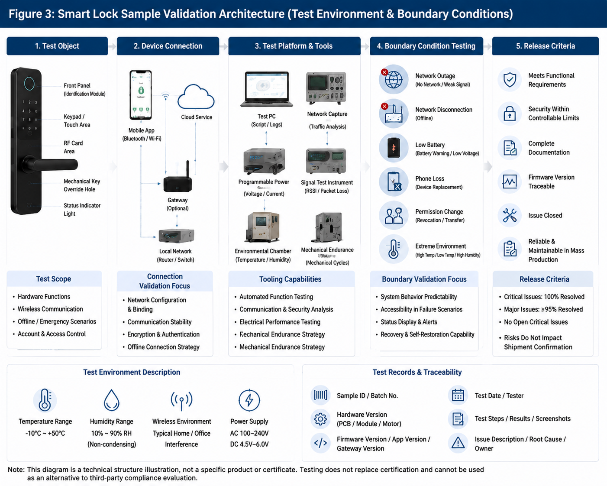

Este artigo é um guia técnico de compra e execução B2B. Critérios, responsabilidades e requisitos locais devem ser confirmados no contrato e no plano de projeto.
Em projetos com dezenas ou centenas de portas, uma instalação que parece aceitável numa unidade pode transformar-se em custo recorrente de assistência. Uma aceitação estruturada liga a condição da porta, a montagem, a alimentação, a função eletrónica e o registo de cada unidade antes da entrega.

1. Defina o âmbito antes de instalar
O comprador, o instalador, o operador e o fornecedor devem trabalhar com a mesma lista de portas e versões. Antes da montagem, associe a cada porta um modelo de fechadura, direção de abertura, tipo de corpo de fechadura, espessura, material, acessórios, método de alimentação e responsável pela inspeção. A amostra aprovada não substitui esta confirmação por local.
Para compras OEM, use a aprovação de amostras e controlo de alterações para congelar a configuração que será aceite em produção. Para o pós-venda, ligue os registos de aceitação ao checklist de suporte OEM.
2. Verifique porta, aro e ferragens
Antes de energizar a fechadura, confirme o alinhamento entre porta e aro, a folga do trinco, o curso do cilindro, a posição do eixo quadrado e a resistência ao movimento manual. Uma fechadura não deve compensar uma porta que raspa, um trinco que encontra o contra-fecho ou uma maçaneta que retorna lentamente.
| Ponto de inspeção | O que verificar | Risco se ignorado |
|---|---|---|
| Alinhamento | A porta fecha sem força excessiva; trinco e contra-fecho coincidem. | Carga elevada no motor e falhas de fecho. |
| Furação | Diâmetro, posição e acabamento correspondem ao desenho aprovado. | Folgas, aperto irregular ou danos no painel. |
| Eixo e corpo | Comprimento e rotação são compatíveis com a porta e o corpo da fechadura. | Desbloqueio incompleto ou desgaste mecânico. |
| Ambiente | Humidade, temperatura e exposição seguem a aplicação planeada. | Desempenho instável e reclamações fora do previsto. |
3. Controle a instalação, não apenas o acabamento
Use binário de aperto consistente, proteja cabos contra esmagamento e confirme que o painel não fica sob tensão depois de apertado. A equipa deve testar o movimento mecânico antes e depois de ligar a energia. Registe alterações de campo, adaptadores e furos adicionais: são informação essencial para diagnóstico futuro.

4. Teste funções, energia e recuperação
Teste cada método de acesso aprovado, o fecho e desbloqueio repetidos, alertas, permissões, ligação ao gateway ou aplicação quando aplicável, e os métodos de abertura de emergência. Confirme a polaridade e o contacto da bateria, o estado inicial de carga e o aviso de bateria fraca. Em projetos multiporta, os resultados devem ser comparáveis entre edifícios e equipas.
- Função de porta: abertura, fecho, bloqueio, retorno de maçaneta e abertura mecânica de emergência.
- Função digital: credenciais autorizadas, permissões, registo de eventos e notificações previstas.
- Energia: inserção, alertas, alimentação de emergência e consumo anormal causado por atrito.
- Conectividade: associação, alcance, gateway e fluxo de exceção definido para portas offline.
5. Registos, exceções e entrega
Uma aceitação útil produz uma ficha por unidade: número de série, localização, configuração, versão de firmware, resultados, fotografias de exceções e assinatura de quem corrigiu e aprovou. A lista de pendências deve ter proprietário, prazo e condição de fecho. Não entregue como “aceite” uma porta que apenas ficou esteticamente concluída.
Para auditorias de fábrica e rastreabilidade, complemente a documentação de campo com o guia de auditoria de fábrica. Em futuras RMA, estes registos evitam que uma falha de instalação seja confundida com defeito de lote.
6. Perguntas ao fornecedor antes do projeto
Compatibilidade e instalação 4 perguntas
- Que desenhos, tolerâncias e tipos de porta foram validados para este modelo?
- Que ferramentas, binários e passos de instalação devem ser usados?
- Que adaptações exigem aprovação antes de serem aplicadas em campo?
- Que formação e material de diagnóstico estão disponíveis para instaladores?
Teste e entrega 4 perguntas
- Que testes de unidade, lote e sistema são esperados antes da entrega?
- Como se registam série, versão de PCB e firmware?
- Quem fecha cada exceção e que evidência é aceite?
- Qual é o processo de suporte para falhas encontradas após a entrega?
Planeie uma aceitação repetível para cada porta
Envie o modelo de porta, o mercado, o volume estimado e o modo de gestão. A equipa WAFU pode ajudar a estruturar uma lista de verificação de amostra, instalação e produção para a sua consulta OEM.
Pedir checklist de aceitação